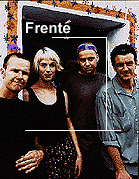
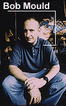
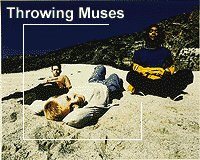
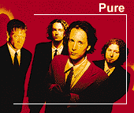

Fans bombarded Todd Park Mohr, lead singer of the Boulder, Colo.,
rock trio Big Head Todd and the Monsters, with typical questions
when he entered an unmoderated chat room on a now-defunct online
service a few years ago. When are you performing next? Do you sell T-
shirts? How much are they? How long has the band been together?
How can I get tickets?
Punks and other art purists have always condemned the gigantic
record companies for controlling everything. If you're a band, and you
want to be heard, you have to win over the guys in ties on the top
floors of tall buildings in Hollywood and Nashville.
There are tons of music-related Web sites out there. The "official"
ones, set up by the record companies, tend to be similar and
conventional--maybe a cool picture, a bio and that's it. The fan sites
can be fascinating. Want to know who produced all of the Tom
Robinson Band's albums? You can find some obsessive "2-4-6-8
Motorway" fanatic out there with that information. Information about
multimedia pioneers, including Laurie Anderson, Todd Rundgren and
Thomas Dolby, is easy to dig up with search engines. And you can't
surf too far without coming across massive tape-trading networks run
by Phish or Grateful Dead fans.
Can starting a buzz on the Internet lift a band quickly from cult artist
to platinum-selling rock star? Not yet, although record companies are
using chat rooms, videos, interactive commentaries and virtual live
performances for publicity purposes, more frantically than ever before.
To hit the big time, musicians still have to go through the usual
channels--play every important nightclub in every major city; drop by
record stores for brief live shows; do interviews with newspapers and
radio stations; and try incredibly hard to get a video on MTV.
Billy Idol, the sneering, spiky haired British punk whose popularity
dwindled after his "Cradle of Love" hit slipped off MTV, was
desperate for hipness. So, flailing for the new big thing, he put out
Cyberpunk in 1994 and included a floppy disk full of weird
electronic pictures with the CD.
Every time Courtney Love scratches herself, something about it ends up
on the Internet. The shrieking Hole singer is notorious for her awful
typing skills, yet her fans hoard her jumbled, soulful e-mails and post
them all across the Web.
Love's FAQ, at
http://www.clysmic.com/clfaq/, is 188K worth of rambling text. SPIN
magazine actually did a long profile of the people who exchange e-mail
with her. A dramatist in New York turned her e-mail postings into an
Off-Broadway play, Love in the Void. With all the attention
Love gets for her legendary Net escapades, you'd think she was the
only rock star out there.
Not so! On any given day, Bob Mould, former frontman of Hüsker
Dü and Sugar, might be surfing the Web for information on pet
arthritis to help his poor old dog. Kristin Hersh, the lead singer of
Throwing Muses, and her 10-year-old son might be looking for sites
about giant squid. Go-Go's guitarist Kathy Valentine might even be
tinkering with her own Web site. Most musicians, who don't quite
share Love's desperation for attention, are content to quietly go about
their business. But they're out there.

"I think we all love communication. That's why we got into the
entertainment business in the first place," says Roger McGuinn, former
lead singer of the Byrds, who were inducted into the Rock & Roll Hall
of Fame in 1991. "Some of the other musicians I know are on the
Net--David Crosby, Chris Hillman, Arlo Guthrie, Al Kooper, Mike
Nesmith, and Peter, Paul and Mary, to name a few."
How do musicians use the Web? Mostly like the rest of us. McGuinn
says every time he needs information about anything, he dials up the
Web. Mould says he uses it like a library. But the Internet also lets
many interested musicians communicate more directly with their fans;
sell records, sometimes without dealing with a big record label; put up
Web pages in their own images and write informed songs about
hackers.
TALKING TO THE CROWD
Mohr ignored all that.
Instead, he zoomed in on a
fan's screen name in the crowd that looked familiar. Mohr told the fan
in question, Scott Replogle, that the same last name was printed on a
globe in his bedroom, and asked was the fan any relation? It turns out
the he was; Mohr's fan was a descendent of the man who owned
Replogle Globes. The singer and globe heir held an odd online
conversation for the next 15 minutes. Meanwhile, the Monsters' more
down-to-earth drummer, Brian Nevin, dutifully answered all the T-shirt
and ticket questions.
This exchange never would have happened if hundreds of people
had crowded around Mohr at the end of a show and shouted for
autographs and handshakes.
Sometimes the Internet, in the same way it allows two people screen
each other before setting up a date, lets a well-known musician interact
with an otherwise anonymous fan.

A NASA worker, for example, once wrote Frente guitarist Simon
Austin a fan e-mail. Today, they're good friends. And Austin can have
in-depth discussions about the British trip-hop bands Tricky and
Massive Attack with like-minded music fans. Most regular newsgroup
posters know who he is, but nobody makes a big deal about it. "It's one
of the places you can talk to somebody without all the bull," Austin
says, by phone from his record label's offices in New York City. "On
the Net, it's a lot more casual. It's not on some sort of trip. There's not
that kind of air of ÎWho's a celebrity and who's not?' It's the people's
media."
The weird thing, for an artist, is entering a chat room where
hundreds of people are analyzing every line you've ever written or
every guitar solo you've ever played. Most artists have smartly learned
to avoid the "sux/rools" debates that clog up the alt.music.alternative
newsgroup and America Online's MTV bulletin boards. They're drawn
magnetically to the more thorough mailing-list discussion groups, and,
sometimes, it scares them.
Mould is a popular enough artist to have over 1,000 listings in the
AltaVista search engine. He was also one of the first 100,000 members
of America Online and regularly surfs the Internet. He occasionally
checks in on his discussion groups. Once, like many celebrities, he was
the subject of a question-and-answer discussion on one of the online
services. Instead of fielding questions from one media interviewer with
a narrowly defined theory, Mould gleaned a broad range of
interpretations of himself and his work directly from his fans.
"I get a really good feel about what people are thinking or
discussing," he says. "They're really thorough--sometimes a bit too
thorough.
"Sometimes they'll obsess about part of a song or something, and I'm
like, 'Whoa! You put more into it than I did.'"
This broad give-and-take criticism can be unsettling for some
musicians, who are accustomed to writing songs in an empty room and
performing concerts behind a wall of stage lights and security guards.
The Internet can break down the walls. For Hersh, lead singer of the
16-year-old Rhode Island punk-pop band Throwing Muses, watching
chat-room words scroll by makes her glad somebody's out there.
It also makes her nervous.
"My band, in particular, feels like it works in a vacuum--and we like
to feel that way, it's healthy to assume no one's listening," she says, by
phone from her Providence, R.I., home. "[The fans] care a lot, which
was something that at first gave me a stomach ache.
"It used to be the only access we got to fans--other than playing live,
which really doesn't count--was playing in-stores where you got to sign
records and talk to people," says Hersh, who has a chat room at her
http://www.throwingmusic.com site, which she confesses is
maintained by other people. "This [online Throwing Muses fan
community] just keeps rolling along all by itself. They buy tickets for
each other, they give each other rides. It's wild to actually pull a fan
base together that way."
DESTROY THE MUSIC
INDUSTRY!
And if you want to get on the radio? Forget it--when President
Clinton signed the telecommunications bill, which deregulated the
radio industry, he guaranteed that a few national media conglomerates
will buy almost all the stations. Which means they'll all sound the
same--even more than they already do.
Until the Internet takes over.
Mould, a savvy independent businessman and a harsh critic of the
music industry, can't wait for that day. "That's when the artist gets the
power back," he says. "Once the artist controls the distribution, then
the art gets real good--because then it's not about the quantity of it,
it's about the quality of it."
Through CDNow! (http://cdnow.com/) and other Internet mail-order systems, Web
surfers can already avoid trips to the record stores. They can also
download music directly from the Internet. Many artists, from David
Bowie to Madonna, have started putting singles (usually through their
record companies) out on the Internet. Eventually, Mould says,
Internet distribution systems will render the old trucks-carting-crates-
of-CDs-to-stores system obsolete. In the process, he adds with a touch
of rebellious fantasy, radio will cease to exist.
"People will go, 'Wow, there's a new Bob Mould CD. To download
it I'm going to have to pay Bob $16 directly,'" says Mould, whose
1996 self-titled solo album was released on the independent record
label Rykodisc. "People are going to be able to hit a site, get the
artwork, download it...I think it's going to be great, because I'm such a
fan of cottage industry. The artists will have that straight one-on-one
with the audience."

The first Throwing Muses EP, in keeping with punk's "do it
yourself" tradition, came out on the band's self-created record label in
1984. So Hersh, who now records for the giant Warner Bros. label, is
equally attracted to Mould's vision. "I'm not anti-label, but it sure
would be interesting, wouldn't it?" she asks. "At the moment they're
becoming a middleman we don't necessarily need. The whole
marketing structure, about how a record has to be played on the radio,
or be trendy enough to get into magazines--it's really a lowest common
denominator situation.
"This way, you can actually market to the people who most want to
hear your music. It's been difficult to find them because they don't
trust MTV to determine their taste in music, just as I don't. It's nice to
be able to go right to them this way."
LOOK AT OUR HOME PAGE
It's hard for a record company site builder to distinguish a band's
official page from any other band's official page. Some have come up
with new tricks--No Doubt guitarist Tom Dumont, for example,
brings a digital camera on tour and posts the resulting pictures on the
page. He also writes a tour diary when he can find a computer. But
mostly, the logic is, why waste time with fancy computer tricks?
"After looking at tons of Web sites, I said to myself, 'Sitting around
waiting for hours for things to download and then having it there for
four seconds is really not that gratifying,'" says Todd Simko, guitarist
for the Vancouver, Canada, guitar-rock quartet Pure, who taught
himself HTML and designed the band's Web page (http://www.purescape.com).
"So I decided to keep it simple."
Part of Roger McGuinn's self-designed site is simple and
straightforward--it's all about the Byrds, the '60s band best known for
the hits "Eight Miles High," "Mr. Tambourine Man" and "Turn, Turn,
Turn." His lengthy Byrds FAQ is informative and funny--he even
makes fun of himself for changing his name from Jim to Roger at a
guru's behest.
But McGuinn's site moves beyond the typical "Gee-wasn't-my-band-interesting" sites on the Web. McGuinn has always
written songs reflecting a fascination with old traditions (such as his
hero, folk singer Pete Seeger) and new technology (his interest in
spaceships and airplanes peaked with the Byrds hit "Mr. Spaceman").
He recently learned HTML programming and, with an expert friend
from the University of Arkansas, set up the Folk Den (http://www.uark.edu/staff/kadler/public_html/
rmcguinn/FolkDen/index.html).
The idea is to spread the "folk process"--handing down songs to new
generations--beyond campfires and jamborees to the Internet. Every
month, McGuinn posts a song for users to download and keep in their
collections. He supplements the music with historical snippets and
personal memories, plus information on learning to play the song at
home.
"I like the cowboy songs and sea chanteys the best," he says. "To me,
there is no difference where you play folk songs, they are still stories.
The World Wide Web gives them an audience that they might not have
otherwise."
INTERNET BUZZ BINS?

But the Internet can contribute. "It helps sell records, I think," says
Kevin Knight, the official computer geek for the ska band No Doubt.
"Perfect example: They did the CD-ROM version of 'Just a Girl.'
Within the first week I had put up a message (on the band's Web site,
http://www.hallucinet.com/no_doubt/) about the CD-ROM--
they sold 1,000 copies. I can't say that was directly because of the
Internet, but I know it helped it along."
No Doubt had been toiling in underground rock clubs and small
college theaters for almost 10 years before its 1995 album, Tragic
Kingdom, suddenly took off. The band's Web page went up late
last year. By January 1996, the record had sold 20,000 copies. Knight
persuaded No Doubt to enter a chat room on the band's site; since
then, the album has hit No. 4 and gone platinum. The Web page
doesn't affect sales that much, Knight says--but a huge No Doubt
community has formed around the band's online activities.
Knight, whose company, Orange County Online, also put up the
Sublime and Sense Field band sites, intercepts fans' e-mail, weeds out
the "Gwen Stefani, I love you" notes and sends the rest to the
appropriate band members. He also helps fans set up their own mailing
lists and answers questions. "That was the whole reason for starting the
Web page--giving the fans a voice," he says. "There are bands out there
who don't care what the fans think--they sell their million records or
whatever and they're happy."
SONGS ABOUT
THE INTERNET
It was a dumb idea--cyberspace devotees in those days were more
savvy, and the Internet as a cheap way of looking hip had not taken
off. The album, which wasn't very good, stiffed.
A handful of musicians, though, find genuine inspiration on the
Internet. The singer-songwriter Poe, who has long experimented with
MIDI and other synthesizer-computer techniques, logged on for the
first time about three years ago. She also started reading a story about a
notorious group of hackers called the Masters of Deception. Around
that same time, her father was sick, and she was taking care of him.
So she wrote a song about all that. "Hello, hello," sings Poe, whose
songs "Trigger Happy Jack" and "Angry Johnny" have become minor
modern-rock radio hits this year. "Are you out there? I can't see your
face. But you left a trace on a data back-road that I almost erased."
The song has made Poe (
http://www.atlantic-records.com/poe/poe1.html)
a sort of hacker icon. "Angry Johnny," who
bombed the White House, Rush Limbaugh, phone-phreak legend John
"Cap'n Crunch" Draper and others with thousands of debilitating e-
mail messages in August, took his nickname from a Poe song. "Hello,"
the title track of Poe's debut album, name-drops "M.O.D.," or Masters
of Deception.
"What was moving to me about it is they were trying in this primal
way to make contact with a system that was neglecting them," says
Poe, who occasionally performs in cybercafes and sets up chat rooms to
supplement the music. "In a weird kind of way, I related to them. My
father had passed away, and that song was ÎHow can I reach him now?'
The Internet was sort of a metaphor for that: Is there another form of
communication, another pathway to reach someone who's dead? That
story (about the Masters of Deception) inspired it."
|
|